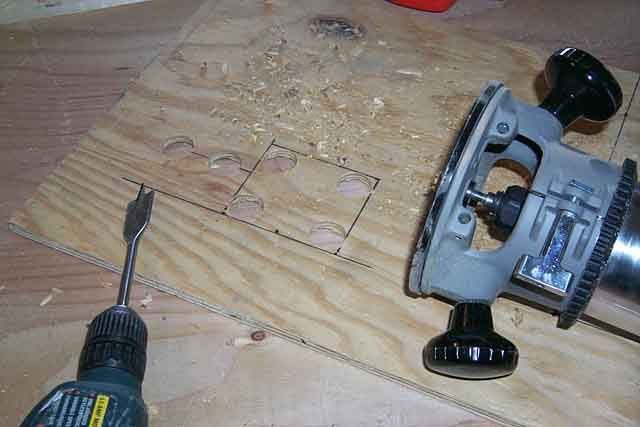
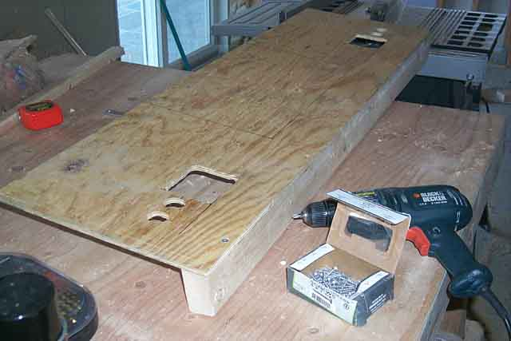
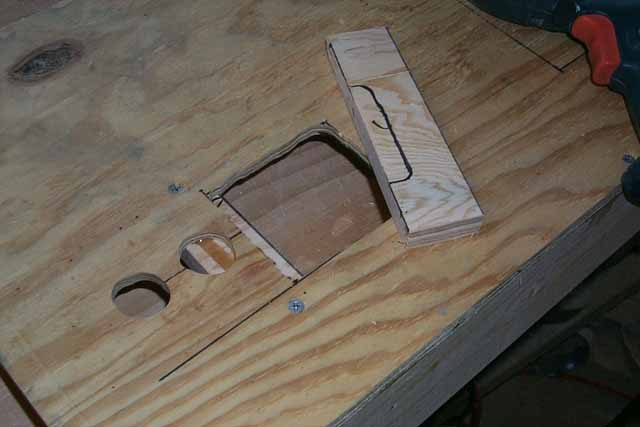

Before
proceeding further, lets discuss a few things about the Colecovision kiosk
control panel. First thing that I notice is that the
control panel appears to be made out of a formed plastic.
Most of us do not have access to having such a panel made without high
costs. If there is someone out there who owns a bodyshop or
a friend who owns one, you may try your hand at making the control panel
out of fiberglass. However, most of us mere mortals will do
just fine with wood with laminate. Another thing
about the control panel is it appears to have some pockets above the joystick/fire
buttons. I'm going to omit this for now, maybe I'll add it
in later, but its more for holding brochures. It would be good
for holding cartridges perhaps. I'm going to leave that
out for now. Lastly, the Colecovision control panel is
biased. Its for righties and is not very PC, so I've
changed the orientation of the joystick/firebuttons on the right side to
be more friendly to lefties. You can arrange them anyway
you want, if you want to stay true the the original, go for it, it not,
not problem. I personally would love to do a revision
2.0 control panel later on and add a bump-out in the center of the control
panel and mount a Roller Controller flush to really give it a more complete
playable look & feel.

Next step.... drill out the holes for the fire buttons and the 4 corners of where the joystick controller will be mounted inside of. I'll use the router to cut out the remaining wood for the opening. Now you may be asking, whats with the big square hole? Why not just a hole for the joystick to stick up out of??? The stalk on the joystick is short, and mounting underneath the plywood will shorten it way too much and you end up with a true Colecovision controller effect.... too damned stubby for any real use. So I've cut out holes for the whole joystick assembly to sit flush with the plywood and I'll mount wood underneath for the joystick base to screw into.

The holes are all drilled
and routed. Time to mount the front 2x4 onto the underside
front of the plywood. When putting in the screws,
screw them flush the the plywood, not straight down, otherwise they may
not sit flush and you'll have to redo them.

Take
some of the spare 3/4" plywood, cut a section about 2" wide and 2 feet
long and then cut them into 4 2" x 6" pieces. These will
be the mounting ledges for the joystick controllers to screw into.
Place the joystick base into position, then on the back of the plywood
place each piece on each side of the joystick base, then mark them.
Now flip the plywood back over, holding the 3/4" plywood ledge against
the backside marking, now mark the front on each side.
Put some wood glue onto each piece and them screw them to the plywood from
the top around the joystick base opening. Test to make sure
the base fits, then repeat on the other side.
One piece of 3/4" plywood will overlap underneath one of the firebutton
openings.... no worry, just cut the needed amount out with a drill or router
so that the firebutton screw-on nut will clear it and screw tightly to
the back of the 1/4" plywood (don't screw the firebuttons into place yet,
just test for fit.)